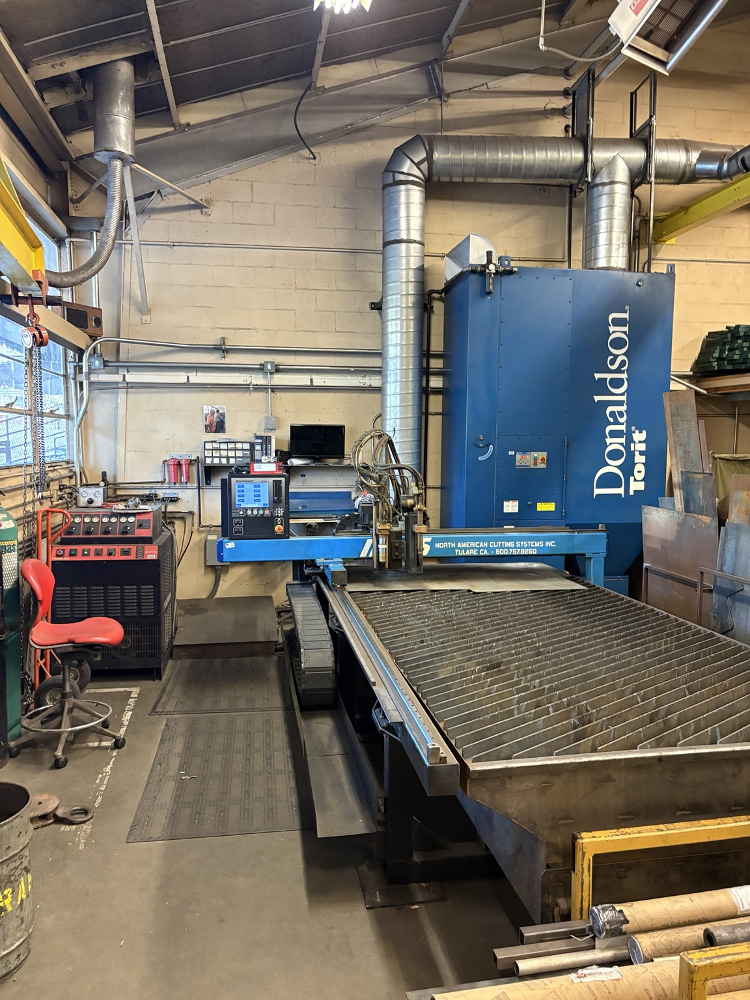
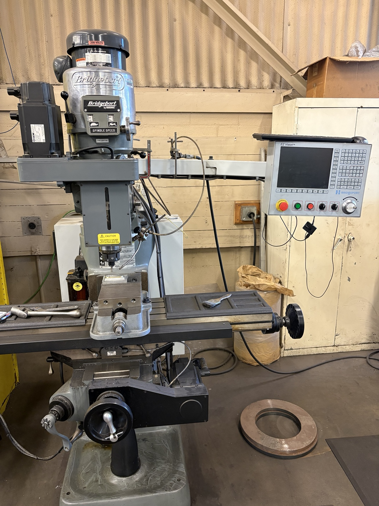
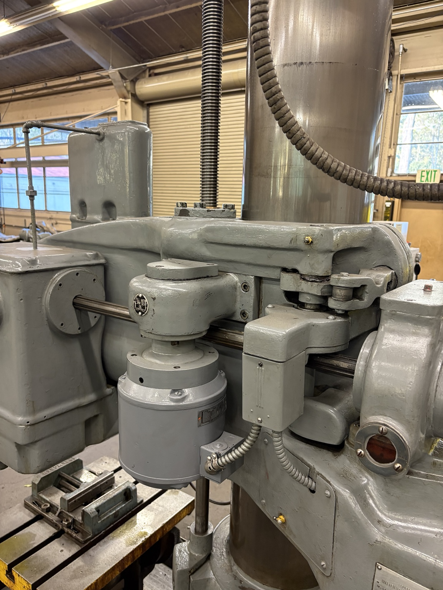
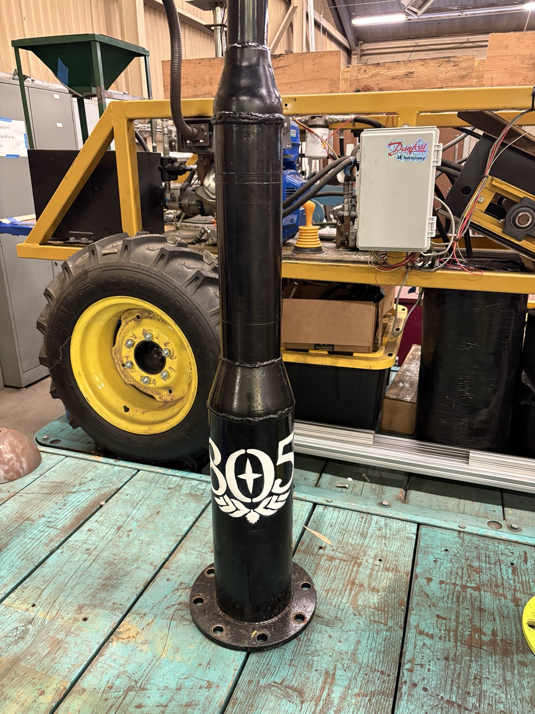
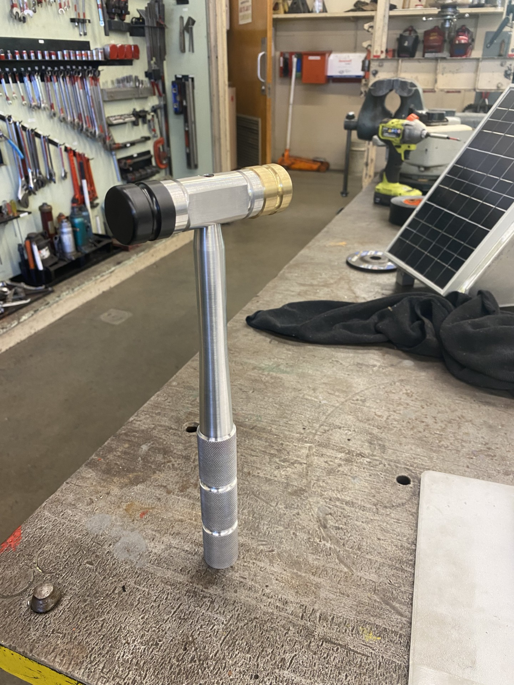

Machining & Fabrication

Project Overview
Hands-on manufacturing showcase covering shop maintenance, student training, machining, welding, fabrication, and equipment repair in the Cal Poly BRAE shops.
My Role
During lower-demand periods, I focus on maintenance, cleaning, repairs, and organization of shop equipment. During active project periods, I train and supervise students in the BRAE shops. I can supervise up to 10 students independently, depending on project activity and the time of year.
Design
I maintain, repair, and teach students to operate existing shop equipment. I am approved to operate lathes, manual and CNC mills, plasma cutters, CNC plasma equipment, welders, bandsaws, shears, hydraulic benders, grinders, drill presses, forklifts, and related shop equipment.
Manufacturing & Fabrication
I help maintain and repair equipment, including returning a CNC mill to service and replacing the elevating nut on a Carlton drill press. I also maintain 3D printers and support laser-cutter safety and 3D-printing operations.




Testing & Troubleshooting
I verify completed parts and assemblies through visual inspection, measurement, and fit-up checks before installation or use. I also identify equipment issues, adjust setups, and support repairs that keep existing shop equipment available for student use.
Final Result
I support the fabrication of mechanical components for student engineering projects while helping keep BRAE shop equipment safe, functional, and available for student use.
What I Learned
Learned that successful fabrication depends on planning the manufacturing sequence before starting, controlling critical dimensions, selecting reliable workholding, and checking fit throughout the process. I also developed stronger troubleshooting, shop-safety, communication, and leadership skills while supporting other students.